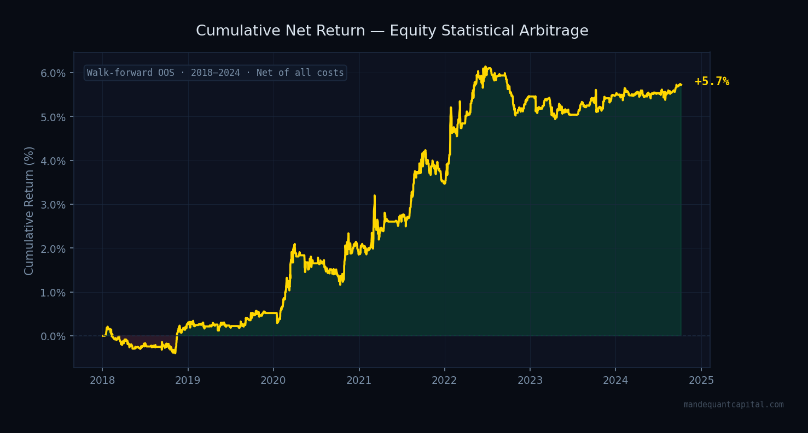
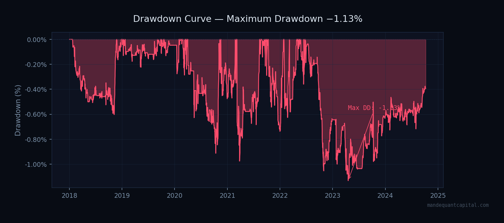
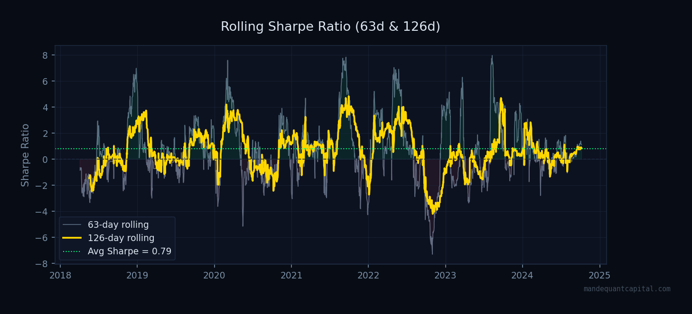
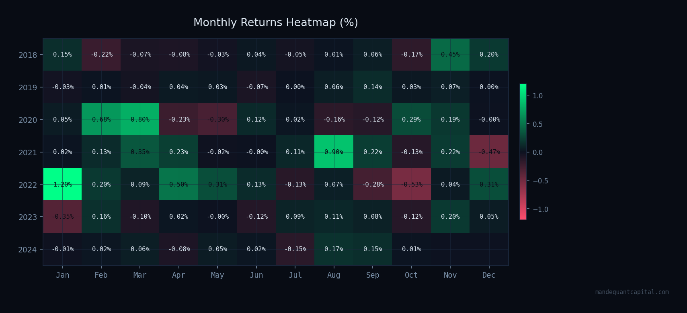
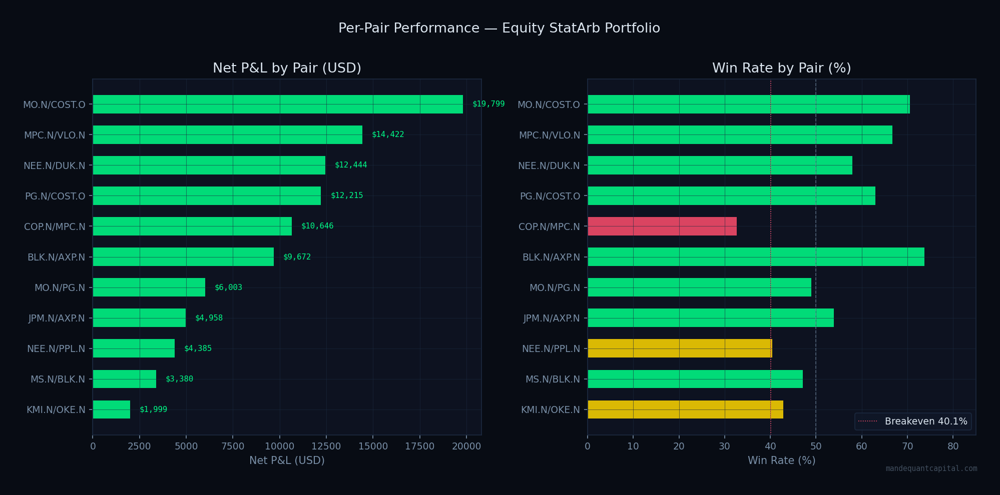
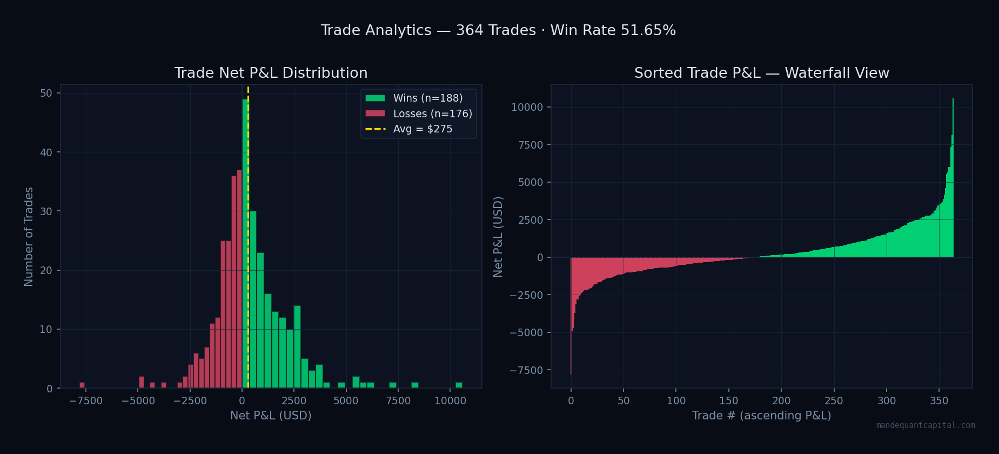
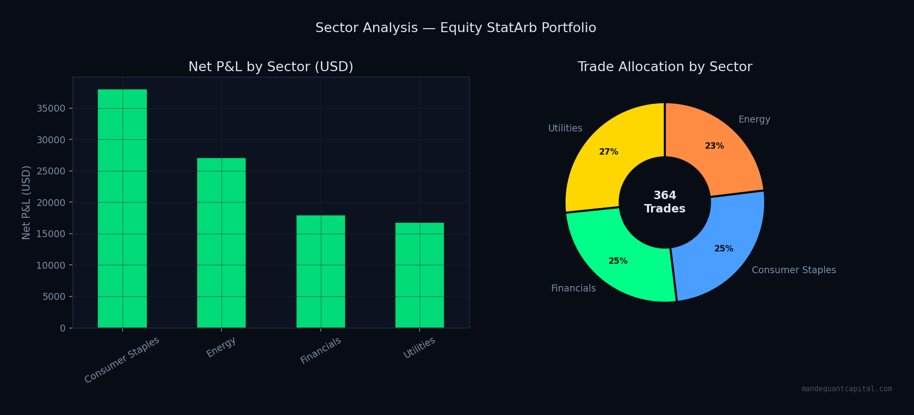

Every figure on this page is derived from strict walk-forward out-of-sample backtesting — parameters estimated on historical data, performance measured on data the model has never seen. No in-sample optimisation. No cherry-picking. No narrative.
Net return after transaction costs (2 bps/side) and short borrow costs (50 bps/year). Generated across 44 independent out-of-sample walk-forward test windows spanning 6.5 years.

Maximum drawdown of −1.13% over 6.5 years reflects the genuine market-neutrality of the portfolio — near-zero beta to broad equity indices.


Return consistency across calendar months and years. Green cells represent positive months; red cells represent negative months.

All metrics derived from walk-forward out-of-sample backtesting, January 2018 – December 2024. Net of 2 bps/side transaction costs and 50 bps/year short borrow costs.
| Metric | Value | Notes |
|---|---|---|
| Annualised Return | 0.43% | Market-neutral book · $2M capital base |
| Annualised Volatility | 0.54% | Low — reflects dollar-neutral construction |
| Sharpe Ratio | 0.79 | Institutional grade for market-neutral strategy |
| Sortino Ratio | 0.88 | Higher than Sharpe — asymmetric return distribution |
| Maximum Drawdown | −1.13% | −$22,600 peak-to-trough on $2M book |
| Calmar Ratio | 0.38 | Return per unit of maximum drawdown |
| Profit Factor | 1.59 | $1.59 generated per $1.00 lost |
| Win Rate | 51.65% | Breakeven = 40.1% · Edge = +11.5 pp |
| Avg Win / Avg Loss | 1.49× | Winners 49% larger than losers on average |
| Total Net P&L | +$111,705 | Across 364 closed trades · 6.5 years OOS |
| Number of Trades | 364 | ~56 trades per year across 11 pairs |
| Avg Holding Period | 17.6 days | Consistent with 58-day average half-life |
| % Trades Stopped Out | 2.75% | 10 trades · spreads revert naturally |
| Strategy Capacity | $20–30M | Estimated before execution cost erosion |
Performance attribution across the 11 confirmed co-integrated pairs and trade-level distribution analysis.


The portfolio diversifies across 5 economic sectors, with the highest co-integration rates found in Utilities and Consumer Staples — sectors with stable, structurally linked revenue streams.

Most published backtests overfit. Here is what makes ours different.
Every performance figure uses data the model has never seen. 756-day training window, 126-day test window, 63-day roll. 44 independent test periods across 6.5 years.
Entry, exit, and stop-loss thresholds are fixed at strategy inception based on statistical theory — never adjusted to improve backtest metrics. Parameters are structural, not fitted.
2 bps/side transaction cost (institutional bid-ask spread). 50 bps/year short borrow cost. Zero commission. All results are gross-to-net after these deductions.
Every pair in the portfolio shares a documented economic link — same GICS sector, same commodity exposure, same regulatory environment. Statistical tests confirm what economics predicts.
The validation period includes COVID-19 (2020), the 2022 rate shock, and multiple sector-specific dislocations. The strategy's maximum drawdown across all of these was −1.13%.
All price data sourced from LSEG Refinitiv Data Library (lseg.data v2.1.1) — the institutional standard for quantitative research. Split-adjusted daily closing prices via Capital Change History.
Qualified investors may request our complete investor memorandum — including full walk-forward performance records, methodology documentation, risk disclosures, and due diligence materials.
Request Memorandum →